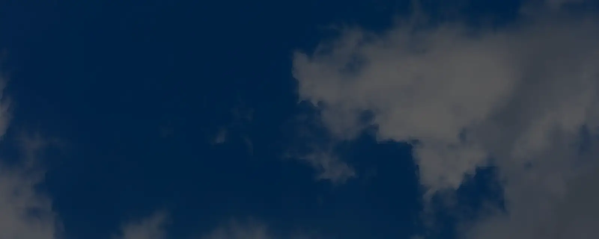

Impacto y transparencia
Nos comprometemos a mantener una comunicación abierta y honesta con todas las partes interesadas, detallando los objetivos, métodos y resultados de nuestra organización.
Impacto en cifras
- Personas atendidas
- 10.250+
- Practicums
- 75+
- Socios
- 170+
PENDIENTE Monográfico, 2025: 108 becas directas, 3.673 personas a través de entidades y 822 socios. La web dice 170+ socios. Confirmar.
Testimonios
Familias
Mamá de Kiara: Nuestra experiencia con Glifing ha sido excelente. Glifing es un método de enseñanza de lectura. Kiara ha crecido de manera significativa y muy notable en poco tiempo utilizando este método. Kiara Maite explica que Glifing le ha permitido participar más en las clases de lecturas, trabajos en equipos y es muy divertido utilizarlo. ¡Estamos muy agradecidas!
Tutora de Kiara: Kiara me ha explicado supercontenta los resultados de la última valoración y la he felicitado por el gran esfuerzo que está haciendo. Desde el centro al que acude también nos ha explicado los adelantos y que ahora se atreve a leer en voz alta en clase de forma voluntaria, ya no le da vergüenza, y está muy contenta y participa más.
Entidades
Gracias a la alianza con Avesedari, hemos podido llevar el método Glifing a colegios públicos de Chile, algo que ha impactado en más de 250 niños y niñas. Durante el año 2023, el 93% de los estudiantes mejoraron su percentil lector y el 23% lograron la lectura autónoma. ¡Vamos por más!
Cuando vi la deficiencia en la comprensión lectora de los chicos de la Fundación Nordelta cuando estuve trabajando en esta fundación hasta el 2023, me di cuenta de que se agrandaba la brecha de la desigualdad de oportunidades para nuestros chavales, y Valeria, de mi equipo, me habló del método Glifing. Me puse en contacto con Montserrat y le comenté que me encantaría construir un puente entre Barcelona y las Tunas, donde está nuestra Fundación. A los dos minutos me llegó la respuesta de Montserrat Garcia: el puente lo acabas de construir. Desde entonces, la fundación trabaja con el método Glifing gracias a la inestimable colaboración con la Asociación Avesedari y yo soy ahora una embajadora de esta asociación.
Informe de impacto social
Teoría del cambio
Memorias de actividades
Estatutos
PENDIENTE Alojar los estatutos en avesedari.com: hoy están en glifing.com.
Avesedari en los medios
20/11/2025
BDN, Badalona Comunicació
El proyecto lector y lingüístico de Avesedari acerca la lectura a los barrios vulnerables de Badalona
Ver en BDN, Badalona Comunicació23/09/2025
UA1 Lleida Ràdio
Entrevista sobre el proyecto Palabras que abren caminos
Ver en UA1 Lleida Ràdio26/08/2025
Lleida Diari
Programas de habilidades parentales y entrenamiento lector en la región de Lleida
Ver en Lleida Diari23/07/2025
Ràdio Sant Boi
Montserrat Garcia explica la tarea de la asociación y el origen solidario del método Glifing
Ver en Ràdio Sant Boi30/04/2025
El Heraldo (Argentina)
La tarea de la ONG Volando Alto en Concordia
Ver en El Heraldo (Argentina)